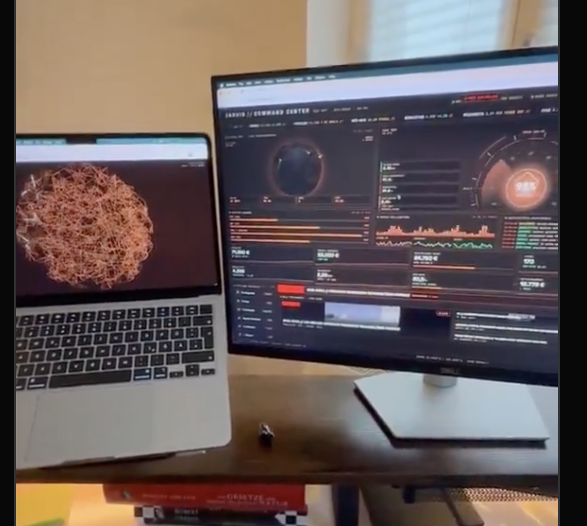
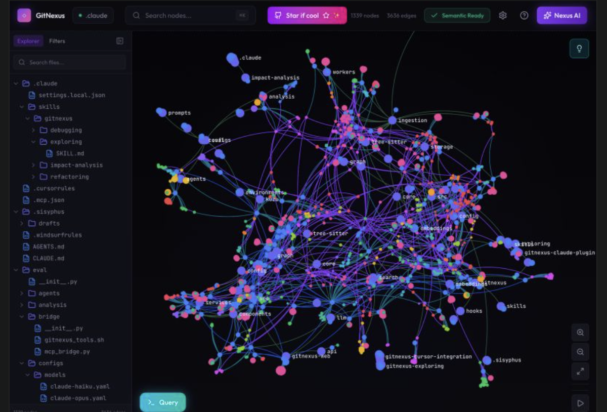

Chronovisor Wiki の知識グラフを 3D force-directed graph で可視化するビューア。 AIがMCP経由でページを読み込んだ際に、ニューロンが発火するようなアニメーション効果を表示する。
chronovisor_read / chronovisor_search でページにアクセスした時にノードが発光し、リンク先に伝播--bg: #08090a, --accent: #828fff, --green: #3dd68c, --amber: #e8b04b, --red: #ff6166chronovisor_read, chronovisor_search, chronovisor_record）を受信~/.chronovisor/pages/ 配下の各 .md ファイル（3,266ページ、80カテゴリ）[[page-name]]) を解析して生成（13,001リンク）title, updated, tags, raw_keywordsops/cortex.py がローカルWikiから動的生成し、/api/cortex/graph で配信。ページ本文と固定JSONはGitへ格納しない

| レンダリング | Fable Canvas 2D + 3D投影（外部依存なし） |
| カメラ制御 | Fableモックアップ準拠の独自orbit / zoom / focus |
| リアルタイム | WebSocket + durable telemetry tail |
| フォント | SF Mono / system UI（Fableモックアップ準拠） |
| バンドル | 追加vendorなし。HTML / CSS / JavaScriptを同梱 |
ops/cortex.py — Wikiグラフ動的生成、キャッシュ、durableイベント変換、WebSocketフレームtools/build_cortex_graph.py — 任意rootからのデバッグ用JSONエクスポートdashboard_static/cortex.html — Fableモックアップ準拠のメインページdashboard_static/cortex.css — 1280×720でFableと同寸法のレイアウト・スタイルdashboard_static/cortex.js — 実データ3D投影、発火、検索、ツリー連動、音声、WebSocketクライアントops/dashboard.py — /cortex、graph API、WebSocketルートindex.html — ObservatoryからSynaptic Cortexへのナビゲーションscript-src 'self'）index.html / app.js の変更（Phase 3 まで触らない）